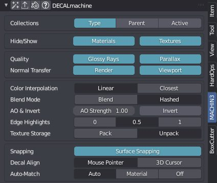

Adjust Decal
shortcut DA in object mode
shortcut DAW to adjust panel decal width
shortcut DA + scroll to rotate a decal
check out the hints in the tool's modal HUD for more
Adjust Decal is a Decal-Swiss-Army-Knife. Using it, you can manipulate various Decal Properties.
Tips
- When changing the width of a Panel Decal, Adjust Decal will update the default panel width value in the pie menu, used by the Slice/GPanel/EPanel tools.
- Similarly, if you change the material/type of a Panel Decal using Adjust, the Slice/GPanel/EPanel tools will remember that choice and use that same material for the next Panel Decal.
Selection
Any number of Decal objects, including a mix of different types.
Non-decal objects can be among the selection and will be ignored.
Using Adjust Decal
Defaults
There are various Decal related default settings, that can be accessed in the DECALmachine Panel.

And there is quite a bit of overlap between the panel's defaults and the properties in the Adjust tool.
But while Adjust works on the current selection of objects, the settings in the panel change Decal properties scene-wide.
Texture Storage
Material Overrides
See this dedicated page for details on Overriding Materials temporarily and non-destructively.
Under/Over Coating
Note
This feature is only available when using DECALmachine 2.9 in Blender 4.0, not in Blender 3.6.
When working with materials taking advantage of the Principled BSDF shader's Coat parameters, you can choose how your decals appear in relation to the caot.
This relates to simple, subset, and panel decals - so the normal mapped ones - and by changing this setting you can create the appeareance of decals being under the smooth coated surface, or create the impression of decals creating an impression on the surface (default behavior).
For now, and as a consequence of DECALmachine re-using decal materials and node trees whenever possible, this is a global setting affecting all decals in a blend file.
And so if you want to change this behavior for only a certain selection of decals, you will have to set it up manually.